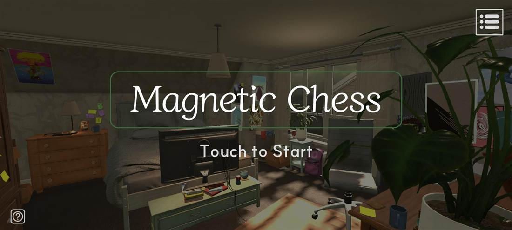
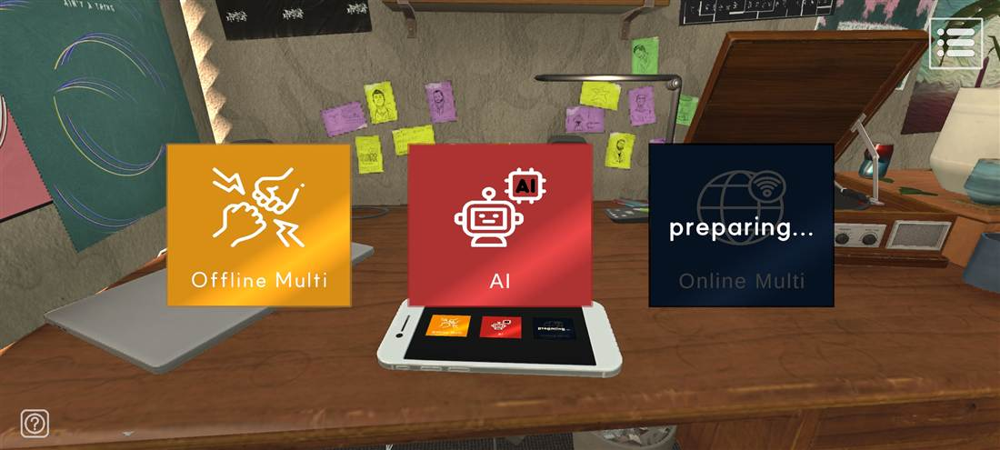
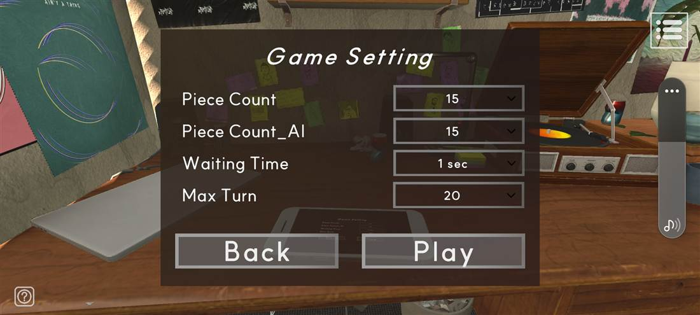
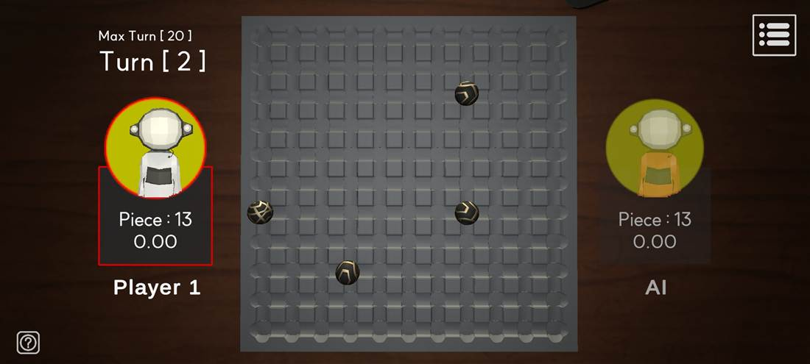

보드 위에 자석 공을 하나씩 놓아 상대의 공을 끌어당기고, 자기 조각을 먼저 0으로 만드는 쪽이 이기는
2인 턴제 게임입니다. 실제로 Google Play에 출시해 운영 중이며,
이 페이지는 출시 이후 Unity 2022에서 Unity 6로 엔진을 올리고 코드를 정리하는 과정에서
마주친 문제들을 중심으로 정리한 기록입니다.
보드를 클릭하면 자석이 하나 추가됩니다. 같은 극은 밀어내고 다른 극은 끌어당기며,
게임의 MagnetWorld.CalculateGilbertForce와 같은 식으로 매 프레임 계산합니다.
Screens
게임 화면
Google Play 스토어 등록에 사용한 실제 빌드의 스크린샷입니다.

Title방 안 책상 위에서 게임이 벌어진다는 설정을 그대로 타이틀 배경으로 썼다. 카메라는 시작 시 책상 쪽으로 이동한다.

Mode Select오프라인 2인과 AI 대전을 제공한다. 온라인 대전은 준비 중 상태로 비활성 처리했다.

Game Setting조각 수, AI 조각 수, 턴 대기 시간, 최대 턴을 경기 전에 정한다. 최대 턴은 무제한으로도 둘 수 있다.

In-Game양쪽에 남은 조각 수와 대기 타이머, 상단에 현재 턴과 최대 턴을 띄운다. 현재 턴인 쪽에 붉은 테두리가 들어온다.
한 판이 진행되는 과정 — 배치부터 결과 화면까지YouTube
Rules
한 턴에 일어나는 일
규칙은 단순하지만, 공이 붙는 순간 조각이 늘어난다는 점 때문에
"많이 붙이는 것"이 아니라 "붙지 않게 놓는 것"이 실력이 되는 게임입니다.
1 · 배치자기 턴에 보드의 빈 자리를 터치해 자석 공을 하나 놓는다. 내 조각은 1 줄어든다.
→
2 · 자력놓인 공들이 서로 끌어당기고 밀어낸다. 물리는 대기 시간 동안 계속 계산된다.
→
3 · 충돌공끼리 붙으면 붙은 개수만큼 현재 턴 플레이어의 조각이 늘어난다.
→
4 · 턴 종료설정한 대기 시간이 지나면 차례가 상대에게 넘어간다.
기본 승리 조건
두 플레이어 중 조각이 먼저 0이 된 쪽이 승리합니다. 조각은 자기 턴에만 변하므로, 0이 된 사람은 언제나 현재 턴 플레이어입니다.
최대 턴 도달 시
최대 턴까지 아무도 조각을 다 털어내지 못하면 남은 조각이 더 적은 쪽이 이기고, 같으면 무승부입니다. — 이 규칙에서 실제 버그가 나왔습니다(아래 참조).
Core System
자석 물리
게임의 유일한 핵심 시스템이자 매 물리 프레임마다 모든 자석 쌍을 도는 O(n²) 루프입니다.
모바일에서 도는 코드라 계산량을 줄이는 것이 그대로 체감 성능이 됩니다.
제곱근 두 번을 식으로 지웠다
원래 코드는 힘의 크기 |F| = μ·m₁·m₂ / (4π·d)를 구한 뒤 방향 벡터
dir/d를 곱했습니다. 이때 magnitude와 normalized에서
제곱근이 두 번 들어갑니다. 두 식을 하나로 합치면 분모가 d²이 되어
sqrMagnitude만으로 같은 값을 얻을 수 있습니다.
MyAssets/Scripts/Magnet/MagnetWorld.csC#
/// 길버트 힘. 원래는 |F| = μ·m1·m2 / (4π·d)를 구한 뒤 dir/d로 방향을 곱했는데,/// 두 식을 합치면 F = μ·m1·m2·dir / (4π·d²)이 되어 magnitude/normalized의 sqrt 두 번 없이/// sqrMagnitude만으로 같은 값을 얻는다.privateVector3 CalculateGilbertForce(Magnet magnet1, Vector3 m1_Pos, Magnet magnet2, Vector3 m2_Pos)
{
Vector3 dir = m2_Pos - m1_Pos;
float sqrDistance = Mathf.Max(dir.sqrMagnitude, MinSqrDistance);float magnetForce = magnet1.MagnetForce * magnet2.MagnetForce;
float scale = Permeability * magnetForce * magnetForce / (FourPi * sqrDistance);
if (magnet1.MagneticPole == magnet2.MagneticPole)
{
scale = -scale; // 같은 극이면 밀어낸다
}
return scale * dir;
}
MinSqrDistance는 두 자석이 완전히 겹쳤을 때 0으로 나눠 NaN이 물리 엔진에
들어가는 것을 막는 하한선입니다. 정상적인 플레이에서는 걸리지 않지만, 걸렸을 때 물리가 통째로
망가지는 종류의 값이라 명시적으로 막아 두었습니다.
자석이 스스로 등록한다
원래는 FindObjectsOfType<Magnet>()으로 매번 씬 전체를 뒤졌습니다.
이건 물리 프레임마다 돌기에는 너무 비싼 호출입니다. 각 자석이 OnEnable/OnDisable에서
정적 목록에 스스로 등록·해제하도록 바꿨습니다. 비활성 오브젝트는 애초에 들어가지 않으므로
결과 집합은 이전과 동일합니다.
MyAssets/Scripts/Magnet/Magnet.csC#
public sealed classMagnet : MonoBehaviour
{
/// 활성화된 자석 목록. MagnetWorld가 FixedUpdate마다 씬 전체를 검색하지 않도록/// 각 Magnet이 스스로 등록/해제한다.private static readonlyList<Magnet> activeMagnets = new();public staticIReadOnlyList<Magnet> ActiveMagnets => activeMagnets;public enumPole { North, South }
public float MagnetForce;
publicPole MagneticPole;
publicRigidbody RigidBody;
private void OnEnable() => activeMagnets.Add(this);private void OnDisable() => activeMagnets.Remove(this);
}
네이티브 호출을 루프 밖으로
transform.position과 transform.parent는 C# 필드가 아니라 네이티브 호출입니다.
O(n²) 루프 안에서 읽으면 자석 쌍마다 비용이 붙습니다. 한 물리 프레임 안에서는 트랜스폼이 움직이지 않으므로,
FixedUpdate 시작에 한 번만 배열로 모아 두고 루프는 그 배열만 봅니다.
아래가 매 물리 프레임 도는 전체 루프입니다.
MagnetWorld.FixedUpdateC# · 전문
private void FixedUpdate()
{
if (IsActive == false) return;
IReadOnlyList<Magnet> magnets = Magnet.ActiveMagnets;
int count = magnets.Count;
if (count < 2) return;
// 자석 수가 늘어날 때만 재할당한다. 매 프레임 new 하면 GC가 계속 돈다.if (cachedPositions.Length < count)
{
cachedPositions = newVector3[count];
cachedParents = newTransform[count];
}
for (int i = 0; i < count; i++) // 네이티브 호출은 여기서 1회씩만
{
Transform magnetTransform = magnets[i].transform;
cachedPositions[i] = magnetTransform.position;
cachedParents[i] = magnetTransform.parent;
}
float maxForceSqr = MaxForce * MaxForce;
for (int i = 0; i < count; i++)
{
Magnet magnet_1 = magnets[i];
if (magnet_1.RigidBody == null) continue;
Vector3 magnet_1_Pos = cachedPositions[i];
Transform magnet_1_Parent = cachedParents[i];
Vector3 accF = Vector3.zero;
for (int j = 0; j < count; j++)
{
if (i == j) continue;
Magnet magnet_2 = magnets[j];
// 자력이 거의 없는 자석과 같은 부모(=같은 오브젝트)는 건너뛴다if (magnet_2.MagnetForce < minMagnetForce) continue;
if (magnet_1_Parent == cachedParents[j]) continue;
accF += CalculateGilbertForce(magnet_1, magnet_1_Pos, magnet_2, cachedPositions[j]);
}
// 힘의 상한도 sqrMagnitude로 비교해 불필요한 sqrt를 피한다if (accF.sqrMagnitude > maxForceSqr)
{
accF = accF.normalized * MaxForce;
}
magnet_1.RigidBody.AddForceAtPosition(accF, magnet_1_Pos);
}
}
자석 쌍마다 힘을 누적한 뒤 AddForceAtPosition을 자석당 한 번만 호출합니다.
상한 검사도 magnitude 대신 sqrMagnitude로 비교해서,
실제로 상한에 걸린 경우에만 normalized의 제곱근을 지불합니다.
Core System
자석볼 스폰과 풀링
한 판에서 자석볼은 최대 수십 개가 생겼다 사라집니다. 직접 만든 MemoryPool을
엔진 기본 UnityEngine.Pool.ObjectPool<T>로 교체하면서,
그 API가 채워 주지 않는 두 가지를 직접 메웠습니다.
MyAssets/Scripts/Magnet/MagnetBallSpawner.csC#
/// 현재 판에 나와 있는 자석볼. ObjectPool<T>는 활성 객체를 열거하는 API가 없어서/// Get/Release 콜백에서 직접 관리한다.private readonlyList<GameObject> activeMagnetBalls = new();
/// 위 목록과 같은 순서로 유지되는 MagnetContact 캐시. 턴이 끝날 때마다 자석볼 전체를/// 훑으며 GetComponent를 부르지 않도록, 풀에서 꺼낼 때 한 번만 찾아 둔다.private readonlyList<MagnetContact> activeMagnetContacts = new();
private void Awake()
{
pool = newObjectPool<GameObject>(
createFunc: () => Instantiate(magnetBallPrefab),
actionOnGet: OnGetMagnetBall,
actionOnRelease: OnReleaseMagnetBall,
actionOnDestroy: magnetBall => Destroy(magnetBall));
}
private void OnGetMagnetBall(GameObject magnetBall)
{
activeMagnetBalls.Add(magnetBall);
activeMagnetContacts.Add(magnetBall.GetComponent<MagnetContact>()); // 여기서 한 번만
magnetBall.SetActive(true);
}
private void OnReleaseMagnetBall(GameObject magnetBall)
{
// 두 목록은 같은 순서를 유지해야 하므로 인덱스를 찾아 함께 지운다.int index = activeMagnetBalls.IndexOf(magnetBall);
if (index >= 0)
{
activeMagnetBalls.RemoveAt(index);
activeMagnetContacts.RemoveAt(index);
}
magnetBall.transform.position = Vector3.zero;
magnetBall.SetActive(false);
}
판이 시작되기 전에 미리 만들어 둔다
경기 중에 Instantiate가 터지면 그 프레임이 튑니다.
ObjectPool에는 사전 생성 API가 없어서, 필요한 개수만큼 꺼냈다가 곧바로 반납하는 식으로
풀을 데워 둡니다.
MagnetBallSpawner.InstantiateMagnetBallC#
/// 판 시작 전, 필요한 개수만큼 자석볼을 미리 만들어 둔다.public void InstantiateMagnetBall(int magnetBallCount)
{
int shortage = magnetBallCount - pool.CountAll;
if (shortage <= 0) return;
// ObjectPool에는 사전 생성 API가 없어서, 필요한 만큼 Get 했다가 곧바로 Release 한다.List<GameObject> warmedUp = newList<GameObject>(shortage);
for (int i = 0; i < shortage; i++) warmedUp.Add(pool.Get());
foreach (GameObject magnetBall in warmedUp) pool.Release(magnetBall);
}
public void DeactivateAllMagnetBall()
{
// Release 콜백이 activeMagnetBalls를 수정하므로 뒤에서부터 순회한다.for (int i = activeMagnetBalls.Count - 1; i >= 0; i--)
{
pool.Release(activeMagnetBalls[i]);
}
}
Core System
턴 진행
리팩토링 전에는 상태·턴 수·승자·타이머가 모두 GameDirector의 필드로 섞여 있었습니다.
Unity API에 의존하지 않는 순수 C# 클래스 두 개로 떼어내, 규칙만 따로 읽고 테스트할 수 있게 했습니다.
Match/TurnStateMachine.csC#
/// 한 판의 턴 진행 상태(누구 차례인지 · 몇 턴째인지 · 누가 이겼는지)를 담는다./// MonoBehaviour와 Unity API에 의존하지 않는 순수 C# 클래스라/// 단독으로 테스트할 수 있다.public sealed classTurnStateMachine
{
publicE_GameState Current { get; private set; }
publicE_GameState WinPlayer { get; private set; }
public int TurnCount { get; private set; }
public bool IsPlayerTurn =>
Current == E_GameState.Player_1 ||
Current == E_GameState.Player_2;
public void ChangeTurn()
{
Current = Current == E_GameState.Player_1
? E_GameState.Player_2
: E_GameState.Player_1;
}
/// 승자를 확정하고 종료 상태로 넘어간다. 무승부는 None.public void FinishWith(E_GameState winner)
{
WinPlayer = winner;
Current = E_GameState.End;
}
/// 2번 플레이어까지 두어야 한 턴이 끝난 것으로 본다.public bool IsMaxTurnReached(int maxTurn)
{
return maxTurn == TurnCount
&& Current == E_GameState.Player_2;
}
}
Match/MatchTimer.csC#
/// 자석볼을 놓은 뒤 결과가 확정될 때까지 기다리는 시간을 재는 타이머./// MonoBehaviour가 아닌 순수 C# 클래스라 프레임 진행은/// 소유자(GameDirector)가 Tick으로 넣어준다.public sealed classMatchTimer
{
private float remainingTime;
/// UI에 표시할 남은 시간. 음수로 내려가지 않는다.public float DisplayTime => Mathf.Max(remainingTime, 0f);
public bool IsFinished => remainingTime <= 0f;
public void Begin(float duration) => remainingTime = duration;
public void Tick(float deltaTime) => remainingTime -= deltaTime;/// 자석볼끼리 달라붙는 등 결과가 아직 확정되지 않았을 때/// 대기 시간을 늘린다.public void ExtendTime(float seconds) => remainingTime += seconds;
}
공이 붙으면 턴이 조금 길어진다
자석볼이 서로 달라붙는 중이라면 아직 결과가 확정된 게 아닙니다.
충돌을 감지한 쪽에서 타이머를 직접 늘려, 물리가 안정될 때까지 턴 종료를 미룹니다.MatchTimer.ExtendTime이 존재하는 이유가 이것입니다.
Magnet/MagnetContact.csC#
private void OnCollisionEnter(Collision collision)
{
if (isContact) return;
if (collision.collider.CompareTag("Magnet"))
{
// 자석볼끼리 붙으면 그만큼 확정 대기 시간을 늘려준다.GameDirector.Instance.ExtendConfirmTime(GameManager.Instance.CurrentSetting.waitingTime * 0.5f);
isContact = true;
}
}
isContact 플래그로 한 자석볼당 한 번만 연장되게 막습니다.
이게 없으면 공 하나가 여러 번 충돌할 때마다 턴이 계속 늘어납니다.
Core System
AI는 어디에 놓는가
이 게임에서 나쁜 수는 "이미 놓인 공 근처에 놓는 것"입니다. 붙으면 내 조각이 늘어나니까요.
그래서 AI의 판단은 비어 있는 자리 중 기존 공에서 가장 멀리 떨어진 곳 고르기로 환원됩니다.
안전 반경을 좁혀 가며 후보를 찾는다
반경 2.0에서 시작해 "그 반경 안에 다른 공이 하나도 없는 빈 자리"를 찾습니다.
후보가 하나도 없으면 반경을 0.2씩 줄여 다시 찾고, 0.5 밑으로 내려가면
안전한 자리가 없다고 보고 빈 자리 중 무작위로 놓습니다.
판이 채워질수록 자연스럽게 기준이 느슨해지는 구조입니다.
MyAssets/Scripts/AI/AI_FSM.csC#
publicVector3 AIMagnetBallSpawnPoint()
{
CheckSpawnPoints(); // 빈 자리 / 찬 자리를 갈라 둔다return notEmptyPointsTransform.Count > 0
? DecideSpawnPoint()
: RandomSpawnPoint(); // 첫 수는 그냥 무작위
}
privateVector3 DecideSpawnPoint()
{
float range = 2f;
bool non_existent = false;
final_index.Clear();
Search_Close_MagnetBall(range);
while (final_index.Count == 0) // 후보가 없으면 기준을 낮춘다
{
if (range < 0.5f)
{
non_existent = true; // 안전한 자리가 없다break;
}
range -= 0.2f;
Search_Close_MagnetBall(range);
}
int index = non_existent
? Random.Range(0, emptyPointsTransform.Count)
: final_index[Random.Range(0, final_index.Count)]; // 동점 후보 중 무작위return emptyPointsTransform[index].position;
}
/// search_Range 안에 놓인 공이 하나도 없는 빈 자리만 후보로 남긴다.private void Search_Close_MagnetBall(float range)
{
final_index.Clear();
for (int i = 0; i < emptyPointsTransform.Count; i++)
{
bool isOk = true;
for (int j = 0; j < notEmptyPointsTransform.Count; j++)
{
float distance = Vector3.Distance(
emptyPointsTransform[i].position,
notEmptyPointsTransform[j].position);
if (distance < range) isOk = false;
}
if (isOk) final_index.Add(i);
}
}
후보가 여럿이면 그중 무작위로 고릅니다. 항상 첫 번째 후보를 고르면 AI가 늘 같은 자리부터
채워서 대국이 단조로워지기 때문입니다. 탐색 자체는 List를 매번 새로 만들지 않고
Clear()로 재사용합니다.
Architecture
코드 구조
출시 당시에는 씬 이름을 따라 AllScene / GameScene / Title Scene으로 나뉘어 있었습니다.
리팩토링하면서 씬이 아니라 역할을 기준으로 다시 묶고, 여러 클래스에 흩어져 있던
싱글턴 보일러플레이트·턴 상태·타이머·패널 표시 로직을 각각 한 곳으로 모았습니다.
Core
7 files · 336 lines
데이터 저장, 게임 설정, 사운드, 씬 전환. Singleton<T>로 중복 제거.
Magnet
5 files · 362 lines
자력 계산, 공 스폰과 풀링, 충돌 판정.
Match
12 files · 1,172 lines
경기 진행. TurnStateMachine·MatchTimer로 분리.
MainMenu
14 files · 564 lines
타이틀·모드 선택·설정 패널.
UI
11 files · 397 lines
공용 패널·메뉴바. UIPanel 기반.
AI
1 file · 136 lines
빈 자리 탐색 후 배치 지점 결정.
매니저마다 복사되던 싱글턴을 하나로
GameManager, DataManager, SoundManager, GameDirector가
각자 Instance 프로퍼티와 중복 제거 코드를 들고 있었습니다. 제네릭 베이스로 묶되,
씬 전환 시 유지 여부는 하위 클래스가 정하도록 열어 두었습니다 —
경기 씬에만 존재해야 하는 GameDirector는 살아남으면 안 되기 때문입니다.
MyAssets/Scripts/Core/Singleton.csC# · 전문
public abstract classSingleton<T> : MonoBehaviourwhereT : Singleton<T>
{
private staticT instance;
public staticT Instance
{
get
{
if (instance == null)
{
Debug.Log(typeof(T).Name + " instance is null!!");
}
return instance;
}
}
/// 씬이 바뀌어도 유지할지 여부.protected virtual bool IsPersistent => true;protected virtual void Awake()
{
if (instance == null)
{
instance = this asT;
if (IsPersistent)
{
DontDestroyOnLoad(this.gameObject);
}
}
else if (instance != this)
{
Destroy(this.gameObject);
}
}
}
정리한 것
이전
이후
싱글턴
매니저 클래스마다 Instance 프로퍼티와 중복 제거 코드를 각자 작성
Singleton<T> 하나를 상속
턴 상태
GameDirector 안에 상태·턴 수·승자가 필드로 섞여 있음
TurnStateMachine이 상태 전이와 승자 확정을 담당
대기 타이머
GameDirector의 Update에서 직접 감산
MatchTimer로 분리
오브젝트 풀
직접 구현한 MemoryPool
엔진 기본 UnityEngine.Pool.ObjectPool<T>
패널 표시
Panel_Base, MenuButtonBase 등 유사 베이스 클래스가 병존
UIPanel의 Show() / Hide()로 통일
In Production
출시한 앱을 고치면서 배운 것
이미 사용자가 쓰고 있는 앱의 엔진을 올리고 코드를 갈아엎는 일은,
새로 만드는 것과 다른 종류의 주의를 요구했습니다. 아래는 실제로 겪은 세 가지입니다.
발견한 버그
스토어 설명문과 실제 동작이 달랐다
구버전(출시본)과 리팩토링본을 파일 단위로 대조하다가, 최대 턴 도달 시의 승자 판정이 서로 다르다는 것을
발견했습니다. 처음에는 리팩토링이 규칙을 임의로 바꾼 줄 알았는데,
스토어 등록에 쓴 설명문을 확인해 보니 출시본 쪽이 명세를 어기고 있었습니다.
명세
스토어 설명문: "Max Turn까지 승자가 없으면 Piece가 더 적은 사람이 승리합니다."
증상
출시본은 최대 턴에 도달하면 조각 수와 무관하게 항상 Player 2(AI)가 승리했다.
원인
종료 조건만 검사하고 승자를 winPlayer = gameState로 덮어썼다. 최대 턴 검사는 gameState == Player_2일 때만 참이므로, 승자는 언제나 Player 2로 고정됐다.
수정
승자 판정을 DecideWinnerByFewestPieces()로 분리하고, 동점일 때의 무승부 상태를 결과 화면까지 연결했다.
출시본 · GameDirector.csBefore
if (GameSetting.maxTurn == turnCount
&& gameState == E_GameState.Player_2)
{
isPlaying = false;
}
if (isPlaying == false)
{
winPlayer = gameState; // 항상 Player_2
gameState = E_GameState.End;
GameFSM();
}
수정본 · Match/GameDirector.csAfter
/// 남은 조각이 더 적은 쪽이 이기고, 같으면 무승부다.privateE_GameState DecideWinnerByFewestPieces()
{
int p1 = playerList[__PLAYER__1].PieceCount;
int p2 = playerList[__PLAYER__2].PieceCount;
if (p1 == p2) returnE_GameState.None; // 무승부return p1 < p2 ? E_GameState.Player_1
: E_GameState.Player_2;
}
오래 방치된 버그일수록 "재현 보고"가 아니라 명세와 코드를 나란히 놓고 읽을 때 드러난다는 걸
배웠습니다. 최대 턴 설정 자체가 선택 사항이고 그 턴까지 가는 경기가 드물어서, 출시 후에도 제보가 없었습니다.
직접 만든 버그
메서드 이름을 바꿨더니 버튼이 조용히 죽었다
코드 컨벤션을 맞추려고 SetVolume_BGM 같은 메서드명에서 언더스코어를 뺐습니다.
컴파일도 통과하고 에러도 없었지만, 옵션 패널의 볼륨 슬라이더가 아무 반응을 하지 않았습니다.
원인
Unity의 UnityEvent 영속 호출은 대상 메서드를 문자열 이름으로 프리팹·씬 파일에 저장합니다. C# 쪽 이름을 바꿔도 프리팹의 문자열은 따라오지 않고, 호출이 조용히 무시됩니다.
범위
씬과 프리팹 전체에서 (대상 타입, 메서드명) 쌍을 뽑아 실제 클래스에 존재하는지 전수 대조했습니다. 이름이 바뀐 클래스는 OptionPanel과 MenuBar 둘뿐이었고, 깨진 바인딩은 6곳이었습니다.
수정
프리팹·씬의 m_MethodName을 새 이름으로 갱신했습니다. 덤으로, 출시본에도 이미 존재하지 않던 SetResolution 바인딩을 함께 찾아냈습니다.
Prefabs/UI_Panel/OptionPanel.prefabYAML
m_TargetAssemblyTypeName: OptionPanel, Assembly-CSharp
- m_MethodName: SetVolume_SFX // C#에는 더 이상 없는 이름+ m_MethodName: SetVolumeSFX
인스펙터에서 연결한 것은 컴파일러가 지켜 주지 않는다는 점을 확실히 배웠습니다.
이후로는 UI 이벤트에 연결된 메서드를 바꿀 때, 프리팹·씬 텍스트에서 옛 이름을 먼저 검색합니다.
엔진 마이그레이션
Unity 2022.3 → Unity 6
출시본은 Unity 2022.3.62f3, 현재 작업본은 Unity 6(6000.5.3f1)입니다.
엔진 메이저 버전과 함께 URP 14 → 17, ProBuilder 5 → 6 등 렌더링 관련 패키지가 한꺼번에 올라갑니다.
이관
FindObjectOfType → FindFirstObjectByType 같은 API 교체, 폴더 구조를 MyAssets/ 아래로 재편. 씬과 프리팹의 GUID는 보존되어 빌드 씬 목록 참조가 깨지지 않았습니다.
주의
렌더링 파이프라인이 통째로 바뀌는 업그레이드라, 프로덕션 트랙에 바로 올리지 않고 내부 테스트 트랙을 거치는 것을 전제로 진행 중입니다.